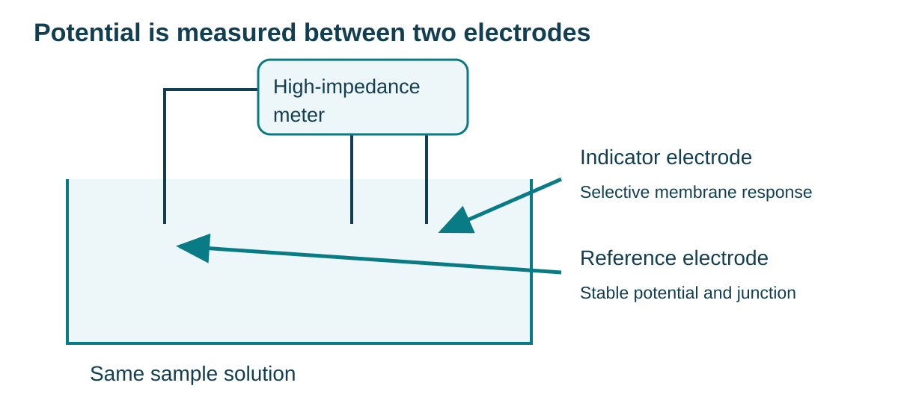
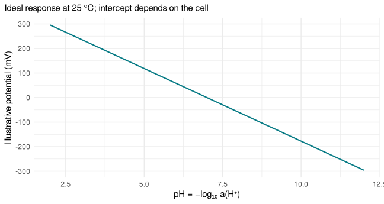
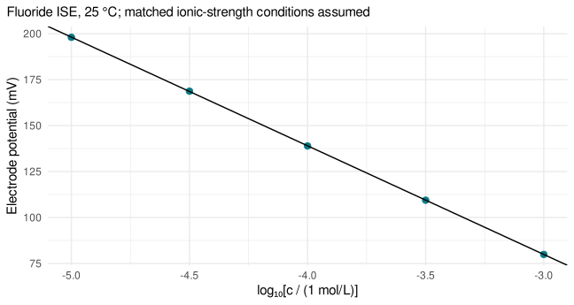
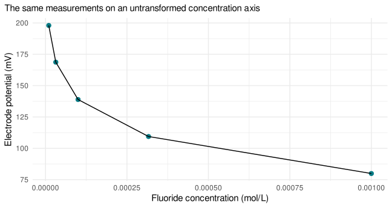
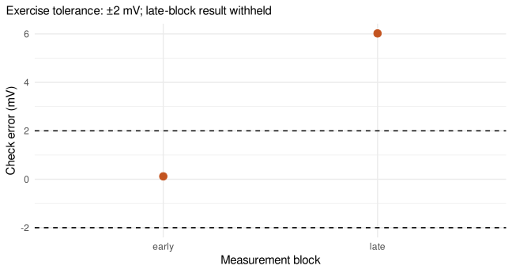

library(readr)
library(dplyr)
library(ggplot2)
standards <- read_csv("data/course/electrode-standards.csv",
show_col_types = FALSE) |>
mutate(log_c = log10(fluoride_mol_l))
fit <- lm(potential_mv ~ log_c, data = standards)
a <- unname(coef(fit)[1])
b <- unname(coef(fit)[2])
coef(fit)
ggplot(standards, aes(log_c, potential_mv)) +
geom_point() + geom_abline(intercept = a, slope = b) +
labs(x = "log10[c / (1 mol/L)]", y = "Potential (mV)") +
theme_minimal()Electrodes and potentiometry
Read a logarithmic response without losing the chemistry
Interactive experiment
Explore the browser demo: Can a reference check pass while sample-specific activity still biases the concentration? Predict first, change one condition, then explain the result. Export a CSV to reproduce one calculation or plot in R.
A voltage depends on the complete cell
A potentiometric measurement compares an indicator electrode with a reference electrode using a high-input-impedance meter. The useful analytical response is a potential difference at negligible net measurement current. A combined pH electrode packages both functions together; it does not eliminate the reference. You will fit a log-concentration calibration, invert it, and use an independent check to detect a later drift.

The indicator membrane responds preferentially to a chemical species. The reference provides a comparatively stable potential and contacts the sample through a junction. Membrane state, junction conditions, temperature and interfering ions can affect the measured voltage. A number in mV is not a concentration until a suitable relation and calibration are established.
Activity explains why matching conditions matters
For an ideal ion-selective response,
\[E=K+\frac{2.303RT}{zF}\log_{10}a_i\]
Here \(z\) is the signed ion charge and \(a_i\) is dimensionless activity, related to concentration by \(a_i=\gamma_i c_i/c^\circ\). At 25 °C the ideal magnitude for a monovalent ion is about 59.16 mV per decade. With this potential convention an anion such as fluoride has a negative slope. Instrument polarity and cell conventions should always be stated rather than guessed from a sign. HORIBA electrode principle

A concentration calibration assumes the activity relationship is sufficiently consistent between standards and samples. An ionic-strength adjustment can help under a specified procedure; it does not make every interference disappear. Do not equate free-ion response with total element concentration when complexes, precipitation or different species are present.
For hydrogen ion, pH is \(-\log_{10}a_{H^+}\). A one-unit increase means a tenfold activity decrease. Calibrate a pH system with appropriate buffers at the measurement temperature, and check performance across the required range.

Fit the fluoride data in logarithmic coordinates
These standards have supplied fluoride concentrations in mol/L under matched ionic-strength conditions at 25 °C. Their response is linear over the stated \(10^{-5}\)–\(10^{-3}\) mol/L range. That is a scenario assumption, not a universal range for every fluoride electrode.

log10() takes a logarithm, not a new unit conversion. Numerically we use the value of concentration expressed in mol/L relative to 1 mol/L. If you change the concentration unit without changing the calibration intercept, the inverse estimate will be wrong. Zero and negative concentrations have no finite logarithm; they cannot be used as ordinary log-calibration points.

Undo the logarithm after inversion
The fitted model is \(E=a+b\log_{10}[c/(1\,\mathrm{mol/L})]\). First calculate \((E-a)/b\), then raise 10 to that power. For a 121.2 mV measurement in the accepted early block, the estimate is about \(2.00\times10^{-4}\) mol/L.
unknown_mv <- 121.2
unknown_mol_l <- 10^((unknown_mv - a) / b)
in_range <- unknown_mol_l >= min(standards$fluoride_mol_l) &
unknown_mol_l <= max(standards$fluoride_mol_l)
c(unknown_mol_l = unknown_mol_l, in_range = in_range)A tenfold change is about 59 mV here; a twofold change is about 17.8 mV. Voltage uncertainty maps multiplicatively to concentration. Symmetric voltage limits generally become asymmetric concentration limits after exponentiation. Do not attach a voltage SD directly to a concentration result.
A late check detects drift
The check material is \(1.00\times10^{-4}\) mol/L. A supplied exercise rule accepts an absolute potential error no greater than 2.0 mV. This is a check rule for the example, not a universal electrode specification.
checks <- read_csv("data/course/electrode-checks.csv", show_col_types = FALSE) |>
mutate(expected_mv = a + b * log10(check_fluoride_mol_l),
error_mv = potential_mv - expected_mv,
check_pass = abs(error_mv) <= allowed_abs_error_mv)
checks
write_csv(checks, "output/electrode-checks.csv")
Do not report the late sample from the earlier calibration after this failure. Investigate electrode conditioning, reference/junction effects, temperature and sample/standard conditions as appropriate; establish satisfactory calibration and checks, then remeasure. A changed voltage alone does not identify which cause occurred.
Place other electrochemical methods
Potentiometry reads potential with negligible measurement current. Amperometry reads current under specified potential conditions. Voltammetry records current while varying potential, and coulometry measures charge. Their signals therefore require different models. In coulometry the ideal amount relationship \(n=Q/(zF)\) also requires the intended reaction to account for the charge. A current reading is not a pH measurement with a different unit.
Practical and transfer
Save the calibration coefficients, early concentration and check table. Explain the activity/concentration assumption, slope sign, inverse calculation and reason for withholding the later result. Compare the same calibration on linear and logarithmic concentration axes.
For transfer, decrease the accepted sample voltage by 17.8 mV using the fitted line. Predict the concentration factor before calculating it. Is a result for free fluoride necessarily total fluorine in a complex sample?
Check the result
The factor is \(10^{-17.8/(-59.10)}\approx2.001\), so the estimate is about \(4.00\times10^{-4}\) mol/L. A free-ion-responsive procedure does not establish total fluorine across all chemical forms.
Selected Harris and Lucy reading: selected electrochemistry and electrodes. Read by topic; the planned course edition is not yet confirmed.
Slides · Course project · R reference
Previous: Equilibrium and titration · Next: UV and visible absorption